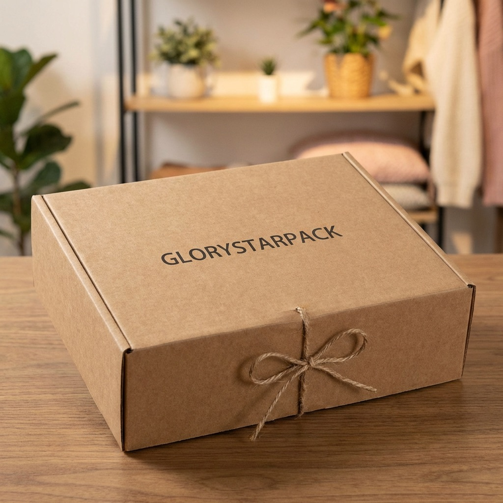
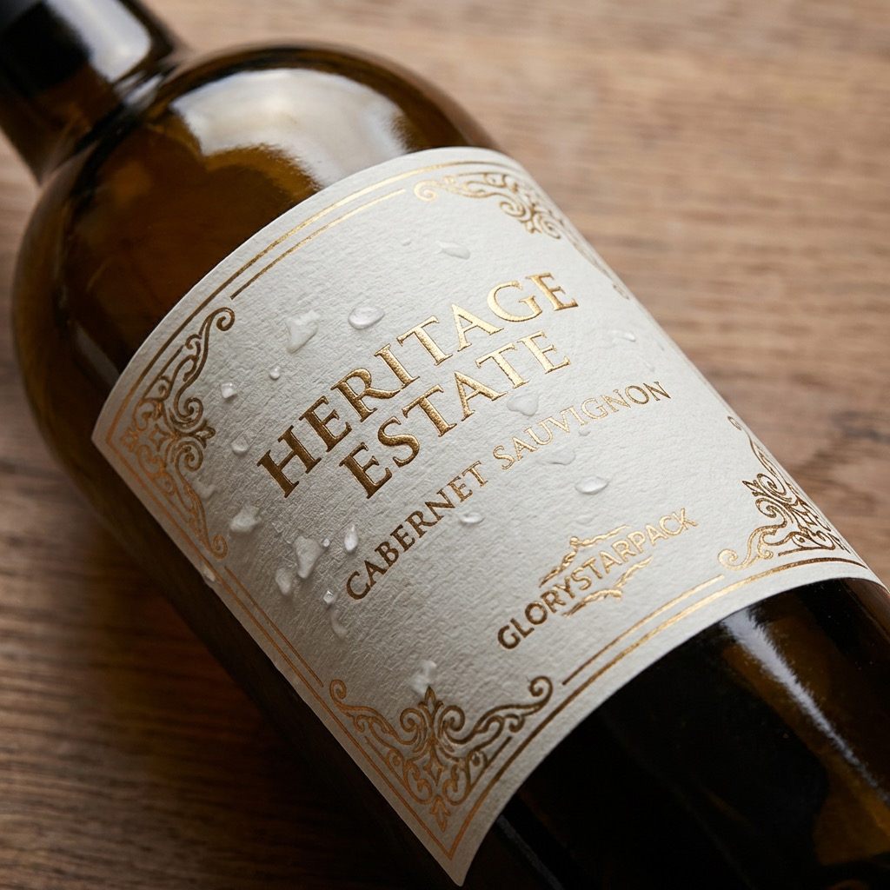

The art of unboxing: turn packaging into a brand asset
Map the opening sequence, product orientation, insert, documentation, and removal experience before adding decorative effects.
Read the unboxing guide
Packaging intelligence
Practical guidance on structure, material, finish, sampling, production, and delivery for teams buying custom packaging.
A better buying sequence
Buyer guides
Use these guides to write a clearer brief, compare quotations fairly, and reduce revisions between concept and production.
Map the opening sequence, product orientation, insert, documentation, and removal experience before adding decorative effects.
Read the unboxing guide
Estimate sheet demand and bundle rounding, then control the wrap, repeat, opacity, print contact, rub risk, folding, packing, low-volume route, claims, and RFQ.
Use the tissue sheet planner
Calculate a planning inside diameter and usable height, then control the loading path, cap, removal, artwork, contact boundaries, sample evidence, and master carton.
Use the paper tube fit planner
Map the arranged item envelope, support zones, chain or clasp path, contact materials, removal, tolerance, sample evidence, and complete shipping pack.
Use the jewelry insert fit planner
Connect product, inside and outside dimensions, case pack, board evidence, closure, pallet constraints, route hazards, testing, and change control.
Use the case-cube and pallet planner
Use supplier master-carton data and measured assembly time to compare empty-box cube, forming labor, structure, storage, landed scope, and RFQ evidence.
Use the cube and labor calculator
Estimate incremental investment, break-even orders, and required order lift, then test protection, packing, shipping, inventory, and customer evidence.
Use the packaging ROI calculator
Check the public record, direct supplier and site, product scope, order claim, label approval, delivery evidence, and certificate changes before relying on a sustainability claim.
Use the FSC verification workflow
Compare loaded protection, inserts, presentation, packing labor, shipment volume, landed cost, sampling, and transit testing on one controlled brief.
Compare the two packaging routes
Control scale, panels, cut and crease paths, bleed, safe zones, print and finishing layers, links, fonts, color, barcodes, proofing, and final file release.
Use the artwork checklist
Compare capability, MOQ, samples, quality control, landed cost, import responsibility, timing, and repeat-order risk on one controlled scope.
Compare packaging supplier routes
Choose a staged route through stock packs, branded components, stock-size printing, modular parts, and a fully custom structure without overcommitting cash to uncertain inventory.
Plan a low-MOQ packaging route
Compare delivery points, risk transfer, freight, customs, destination charges, container alternatives, and landed cost on one quotation basis.
Compare packaging Incoterms
Size the pack from the product outward, control internal and external dimensions, then define board, closure, parcel test, failures, and RFQ inputs.
Build a mailer specification
Build a representative test around the bottle, application line, dwell, cold storage, condensation, ice bucket, wet handling, and defined failure limits.
Use the wine label test guide
Control one brand target across papers, films, spot and process inks, coatings, proofs, lighting, measurement, and repeat production.
Read the packaging color guide
Compare fit, surface protection, removal, production controls, testing, pack-out, and end-of-use tradeoffs before selecting an insert.
Read the insert material comparison
Map dimensions, construction, wrap, inserts, finishing, versions, packing, and freight before comparing rigid box quotations.
Review rigid box cost drivers
Compare opening movement, product reveal, insert fit, tolerances, packing volume, sampling, and landed scope before choosing a rigid box.
Compare the two structures
Understand how structure, materials, tooling, finishing, quantity, versions, packing, and delivery shape a comparable packaging quotation.
Compare cost and MOQ drivers
Review the sample type, product fit, opening, material, artwork, color, finishing, pack-out, and revision record before bulk approval.
Use the approval checklist
Compare how foil and clear spot gloss behave across dark stock, matte lamination, fine type, large patterns, tooling, and production tolerances.
Compare the finishes
Reduce empty space, unnecessary layers, mixed components, and freight volume before choosing a material story or certification claim.
Read the structure-first guide
Build a schedule from the warehouse date backward, compare Incoterms fairly, and confirm cartons, gross weight, marks, and packing before freight is booked.
Plan production and freight